我之前提及的我的方法，可以描述为
·行动起来，去尝试。
·如果不行，再试试别的。
·犯错，并从错误中学到东西。
·计划是给懦夫的。
·如果你玩得高兴，谁会在意你是否得出答案？
这方法永远有用？嗯，并不。我不妨坦白告诉你，反正你自己也可能会发现。
如果这个方法对你来说行不通，我想说的是：
1.如果你花费数小时/数天/数周/数年，用我的方法解决某个问题而不成功，你也没有浪费时间，因为
·（我希望）你体会到了乐趣。
·你增长了智慧。
·你现在对这个问题的理解层面更深了。
2.你可以一直用标准方法进行尝试。读书，看攻略、问周围的人、上网。你的问题可能如此之难，以至于没人能解。
3.但是我的方法重要之处在于
·大部分时候是行得通的。
·任何人都能用，不论天资或经验。
·它是一个简单的存在，这意味着没有人会在没用过它之前就言之凿凿地说“试了也无济于事，我做不到”。
从另一个角度说——
如果你认为问题在于缺乏智慧，那你还没有尝试过如何沉默。
4.在针对问题进行不成功的尝试这方面，我远远走在你的前面。几十年来我处处碰壁。成功的数学家和厨师习惯于失败。我交过手的问题已经解决5%到10%。这可能是数学家的特点[59]。
我要给你两个例证，一个是数学方面的，一个是烹饪方面的。两者我都宣告失败——虽然取得了部分进步，但是没有解决方案。
一个卑鄙、阴险、缠人的问题
我曾在世界上受众面最广的数学期刊《美国数学月刊》上看到一篇关于这个问题的文章[60]。我们就称它为“灯的问题”。在这个问题中，n盏灯被摆放成一个圆形，所有灯都是开着的，一个箭头指向其中一盏灯。
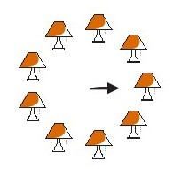
如果这盏灯左侧（沿顺时针方位）的灯是亮着的，则拉下这盏灯的灯绳（关灯）。在这种情况下，其左侧的灯是亮着的，所以你需要拉下灯绳。然后箭头顺时针移动一盏灯位。
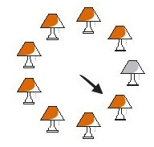
现在你需要重复上述操作，因为左侧的灯是关着的，所以你不需要拉下灯绳，但是要移动箭头。
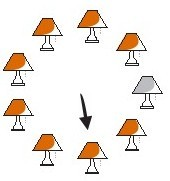
继续前面的操作，这一次你需要拉下灯绳。
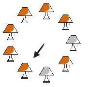
只要继续下去，最后（可能是很长时间之后），所有的灯都恢复到开启状态。灯的问题是一个查找问题，根据数字n（灯的数量），需要多少步才能使所有的灯再次点亮。上图中有9盏灯，在这种情况下我们需要73步。
这个问题尚未解决。没有人发现计算步骤的公式。
着手处理难题的方法有很多。其中之一是将其分解、剖析成若干个较小的问题。我看到的这篇文章就是这样处理灯的问题的，并且也解决了几个较小的问题。但是整个问题还未被解决。
另一个方法是将问题视为某个更大问题的一部分。
有时更大的问题实际上更容易解决，因为你正以不同的立场和观点看待事物。这就是我所做的事情。我发现了一个更大的问题，但是它并不是更容易被解决。我称其为蛇的问题。
一条蛇长度为j（在这个示例中j=9）。
假设它以迂回曲折的形式四处蛇行。
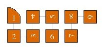
随后断开
移位
重新组合成一条新蛇。
这个动作基本上对数字1到j进行了重新排列。
蛇的问题是关于发现的问题。知道了j，你必须经历多少次蛇行、断开和重组，回到最初的那条蛇。这条有9节的蛇需要7步。
原来如果你能解决蛇的问题，你就能解决灯的问题！灯的问题中n盏灯与蛇的问题中蛇的长度是相同的。
j=2n
例如，算出这一组灯
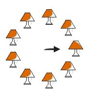
你只需分析这条蛇！
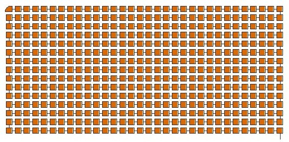
因此，蛇的问题是更大的问题。实际上只有一部分蛇的问题（蛇的长度是1，2，4，8，16，……）是灯的问题所需要的。
但是，唉，我不能解出蛇的问题，至多能解答灯的问题。相反，我又提出了一个问题。我称它为粘性反弹问题。
“粘性反弹”是当一个颗粒碰到某个表面后
再与表面成90度角反弹出去。
现在，想一想，一个等边三角形的边长为q（在这个示例中q=7）
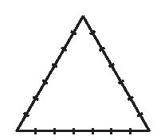
从底边与左下角距离为1处开始，一直向上直到碰到三角形的一条边。以粘性反弹的形式弹开，与所碰及的那一边成90度角。
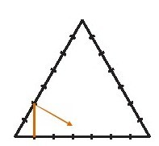
结果是，如果q，即等边三角形的边长是奇数，你最终会回到起点。
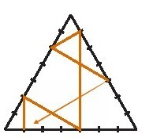
粘性反弹的问题是关于查找的问题。根据q，在你重新回到起点之前，反弹的整条路径上会有多少节。对这个7三角形（边长为7的三角形）来说，一共有6节。
粘性反弹其实是偏离轨道的。这个粘性反弹问题没有与蛇的长度2，4，8，16……相连。我所发现的是，如果一个三角形的（奇数）边长为q，其路径
的节数为偶数，那么节数与长度为2q的蛇的问题的答案一致。换句话说，因为边长为7的三角形（前文）有6节，长度为14的蛇
需要6步。
但是如果路径节数是奇数，那么答案就是长度为2q的蛇的问题的答案的一半。换句话说，因为边长为11的三角形，路径有5节，
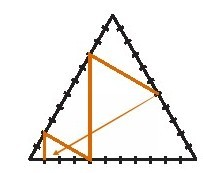
所以，长度为22的蛇需要走10步。
但是，唉，我没能解决粘性反弹的问题！
这样一来，我真正完成的是什么呢？没什么！但是我觉得很开心，而且我发明了两个让我感兴趣，也可能会让其他人感兴趣的谜题。
而我还没有做完，我打算在这上面再多做一些事情。我会将谜题的相关消息在本书的网站上公布（现在已有一些关于粘性反弹的信息）。
一道快乐的素菜
素菜的菜谱成千上万。素食厨师非常有创新性。素食菜肴味道极好又有营养。当然，它们无法满足每一个人的要求，但是它们能满足普遍需要，并且风味多样。
素菜适合各种场合——除了一种场合。这与（用香肠原料肉）代替烤火鸡不能相比，并不存在里程碑式的值得庆贺的素菜菜式。
我想说的不是素菜成分看起来或者尝起来像烤火鸡（例如豆腐火鸡）。我将火鸡想成一种习俗。火鸡不只是一餐饭，它是对富足、家庭[61]和国家的一种庆祝。它是多维度盛宴，需要花费数小时准备、烹饪，还要花数小时吃，再用几周时间排出干净。
有些令人久久回味的素食创新——例如，莫利·卡曾的魔法花椰菜盛宴。但是我还没有看到任何能真正代替烤火鸡的东西。我在这里发出的挑战（我已经多次应对这个挑战了）是要创造出一种素食菜肴，可以：
1.让我们觉得我们是一个大家庭。
2.让我们觉得我们生活在一个伟大的国家。
3.挚爱我的人在厨房忙了好几个小时为我准备，而我也很爱每年吃一次。
我尝试过了，并坚持尝试。我不是素食主义者，但是我经常为素食主义者做菜，例如，感恩节的时候。
惠灵顿蔬菜
这是最初的尝试，我没有确切地记录自己做了什么，但是惠灵顿牛肉是非常好吃的菜。将一块牛腰部的嫩肉浸泡在卤汁里，然后抹上一层嫩煎蘑菇丁、马德拉酒、青葱和鹅肝酱，之后放在做千层饼的容器中烘烤。
我依然认为惠灵顿蔬菜也可以这样做。无论我做什么都会有人欣赏，总有人爱吃，但是我很失望，不再尝试了。
串烤茄盒
这道菜告诉我尝试的过程中会出现的危险。我曾遭遇过。我将塞满馅料的茄子串起来，放在火上烤。一切似乎都很好。它开始上色，疏松。
我回到厨房去准备酱汁。我想我永远不会忘记当所有东西变成火焰时我的客人们发出的尖叫声。
龙甲卷
我认为这个有极大的潜力。“龙甲”是豆腐皮，一种超薄的豆腐片，原本是冷冻的。你需要将这些皮解冻，在上面涂上油和美味可口的东西，然后再多用几层豆腐皮卷绕住一些有特别香味的东西。油炸，外层会变得很脆。
我用豆腐皮包了传统火鸡。我的想法是这样的，豆腐可以提供一餐中的蛋白质，我可以用蔓越橘酱汁、土豆泥和某种肉汁配这道菜。
还不赖。但是缺少分量。火鸡肉有一种不容忽视的坚实的存在感，但是这道菜没有那种感觉。
素食豆焖肉
豆焖肉是一种用肉类和调味汁做出的味道丰富的豆类菜肴。豆类是主材，但是肉非常重要：猪肉、羔羊肉和鹅肉。我曾做过一道没有令人印象深刻的素食豆焖肉。我决定做些特别的。
我以茱莉娅·查尔德在《精通法餐烹饪艺术》中提供的豆焖肉菜谱为基础，使出浑身解数。结果非常棒，但是与我的目标略有不同。我是这么做的：
900克白豆
我将这些白豆放到沸腾的水中，让水重新煮至沸腾，然后关火，让豆子浸泡一小时。
3个小黄金甜菜
2根防风草
1个丰满的胡萝卜
2个大个青葱
一些小贝拉蘑菇
2个番茄
1头大蒜
这些我会涂上花生油，然后热煨（烤）一下。
一个伪汉堡的制作方法（第46页）
甜胡椒
月桂树叶
白兰地酒
大蒜
松露（松露盐也可以）
加这些草本植物是茱莉娅制作香肠的方法，我将它们加入伪汉堡。我将混合物做成丸子，煸成褐色，用些东西稀释锅底的糊块，但是我忘了是什么。
很多栗子肉
这些我用水煮开，然后去壳，之后用黄油炒。都做完后我有大概1杯栗子肉。
1个甜的红椒
我用煤气火焰将其弄黑，剥落烧焦的表皮后切碎果肉，用黄油炒。
1个大洋葱
我用黄油将其炒成焦糖色。
1包经典法式金香草精华[62]
2杯白苦艾酒
2片月桂叶
1个小枝百里香
几块帕尔玛干酪
豆子
做完所有这些我用了一个半小时。
大块切尔达干酪若干
小块黄油若干
最后我将这些和其他所有东西放在一个焙盘中烤了一会儿。
我做成了什么？不是很多！但是我觉得很高兴，我设计出几道自己感兴趣，别人或许也会感兴趣的新菜品。
我没有做完，但打算做得更多。我会在这本书的网站上公布新消息（现在网站上有豆腐奶油多层夹心蛋糕的制作方法）。